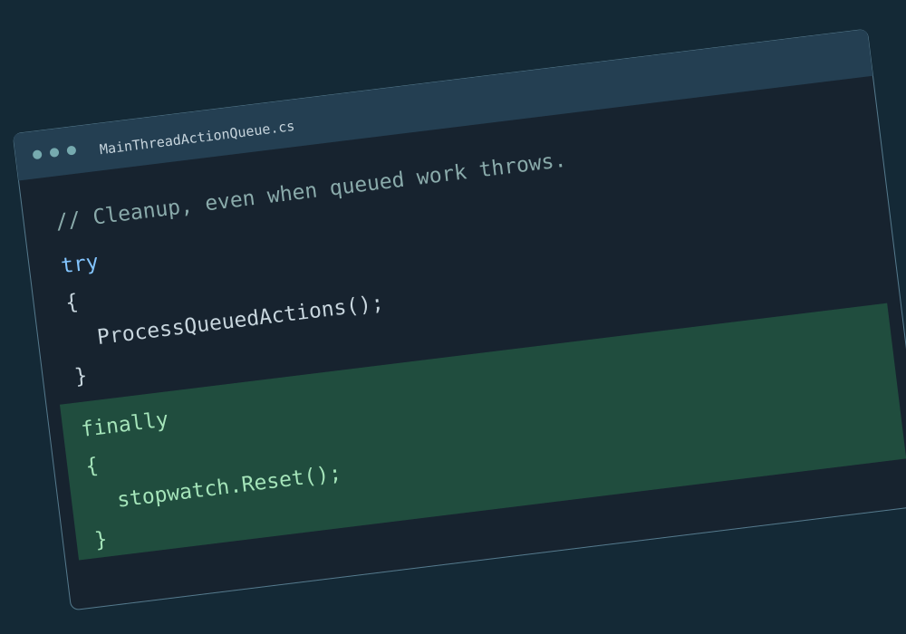

Contributions
Issues investigated, changes proposed, and fixes adopted by the wider software community.
Contributions 1
An exception-path timer bug, a proposed cleanup fix, and its adoption by the maintainer in LayerProcGen 0.5.0.